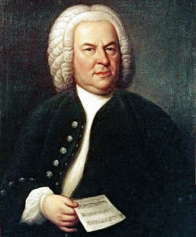
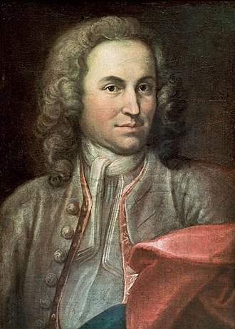
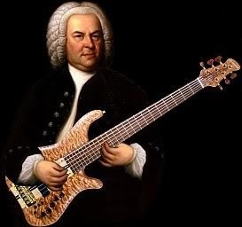
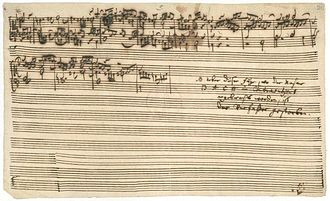
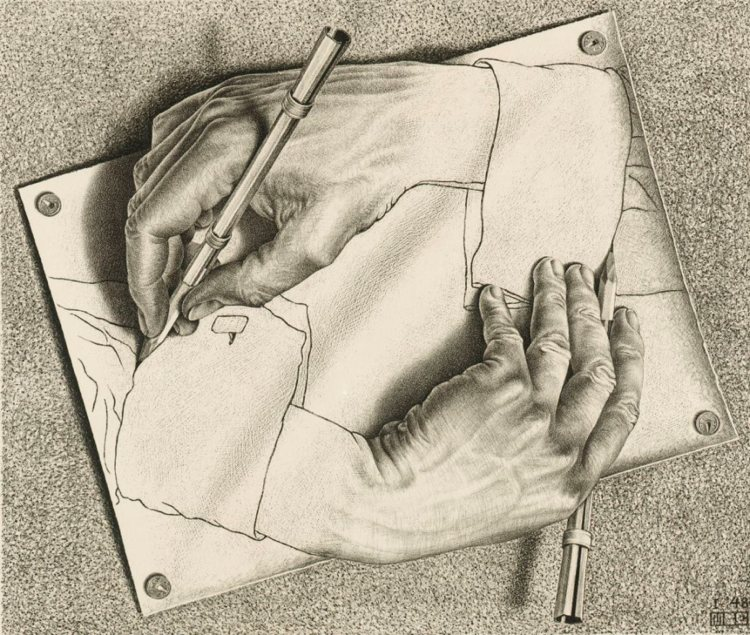
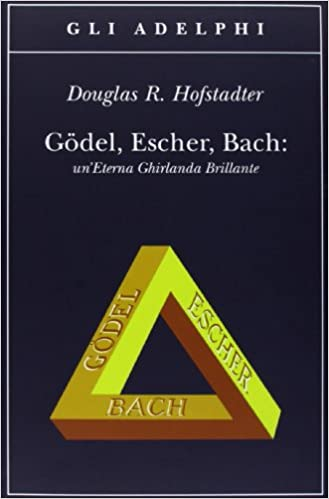

Esistono molti ritratti di Johann Sebastian Bach, di seguito i principali:


- Elias Gottlob Haussmann, anno 1746:
Olio su tela, dimensioni 79,5 cm x 63,5 cm., ad Haussmann viene commissionato il ritratto di Bach direttamente dall’artista in seguito alla richiesta della società che l’aveva insidiato come membro onorario della Correspondierende Societät der musicalischen Wissenschaften (associazione di studi musicali). Il ritratto subì, nel corso degli anni, vari restauri, più o meno drastici.
- Elias Gottlob Haussmann, anno 1748:Olio su tela, dimensioni 76,3 cm x 62,8 cm. Questo quadro, copia del ritratto del 1746, è in condizioni decisamente migliori del primo ritratto. Il volto di Bach appare più espressivo e il manoscritto che il maestro tiene nella sua mano viene rappresentato con numerosi dettagli, le note indicate sono più chiare. Mentre possiamo rilevare che rispetto all’opera del 1746 Bach viene rappresentato con la posizione delle mani e delle dita in modo differente.
Alcuni sostengono che questo sia il ritratto originale che Bach donò alla società di Mizler, e che il precedente sia la replica. In questo caso, le date dei due ritratti andrebbero invertite.
- Joachim Ernst Rantsch, anno 1715:
Olio su tela, dimensioni 60 cm x 44 cm. senza firma dell’autore del dipinto, anche se la paternità del quadro viene attribuita all’ pittore Rantsch.
Il dipinto venne ritrovato nel 1877 in una soffitta a Erfurt e raffigurerebbe il giovane Bach fra il 1708 e il 1717, all'epoca in cui era capellmeister presso la corte di Weimar.
Successivamente, furono sollevati numerosi dubbi rispetto alla sua autenticità alcune caratteristiche, come le sopracciglia, gli angoli della bocca e la forma del naso potrebbero riportare a Bach, ma non si ha la certezza assoluta che nel dipinto venga rappresentato effettivamente lui.
- J. J. Ihle, anno 1717-1723:
Olio su tela, dimensioni dopo il restauro 78 cm x 63 cm.
Il quadro, secondo alcuni, ritrarrebbe Bach fra il 1717 e il 1723, durante il suo mandato come capellmeister del principe Leopoldo di Anhalt-Köthen.
La sua autenticità si basa solo su congetture infatti venne contestato a causa della distanza geografica fra il ritrattista e il principe Leopoldo e alla data di realizzazione dell’opera che non coincide con l’età anagrafica dell’artista.
- Gottlieb Friedrich Bach, anno 1714-1785:
Olio su tela, dimensioni 16 cmx 13cm, realizzato dal cugino di Bach durante una sua visita a Lipsia, ma la paternità dell’opera appartiene a Carl Philipp Emanuel.
Carl Philipp Emanuel Bach, figlio di Johann Sebastian, in una lettera a Johann Nikolaus Forkel parlò di un piccolo ritratto a pastello raffigurante il proprio padre, definendolo «un bel pastello, molto somigliante».Benché non sia firmato e sia collegato a Bach solo da una tradizione orale, è possibile che questo sia il pastello al quale si riferiva.
Il musicologo Heinrich Besseler, dichiara che l’anno di appartenenza del dipinto è il 1736, perché indossa una giacca azzurra, divisa da compositore della corte di Dresda. Resta il fatto che il colore degli occhi di Bach era diverso da quello rappresentato nell’opera. Infatti il quadro rappresenta il maestro con gli occhi azzurri e non castani.
Torna all'indice
Molti documentari e cortometraggi parlano di Bach. Eccone alcuni:

- Johann Sebastian Bach, cortometraggio del 1958 diretto da Hans Cürlis.
- À la rencontre de Jean-Sébastien Bach, un documentario cortometraggio del 1959.
- Cronaca di Anna Magdalena Bach è un film biografico su Bach del 1967
- The Joy of Bach, documentario del 1980.
- The Cantor of St Thomas's, cortometraggio del 1984.
- Johann Sebastian Bach, film per la TV del 1985.
- Famous Composers: Johann Sebastian Bach, documentario cortometraggio del 1996.
- Bach en Zaraza, documentario cortometraggio del 2002, diretto da Luis Armando Roche
- Mein Name ist Bach, film del 2003, di Dominique De Rivaz.
- Die Stille vor Bach, pellicola del 2007, del regista Pere Portabella.
sigla di Quark e Super Quark condotto da Piero Angela (Suite per Orchestra N.3 di Bach, più comunemente nota come “Air” Aria sulla Quarta Corda).
farmaco Buscopan (Toccata e Fuga in Re Minore, BWV)
Poltrone e Sofà (Preludio e fuga a 3 voci in do minore BWV 847)
Estathé (Aria sulla Quarta Corda)
Torna all'indice


In tutto le fughe di Bach sono 19 a tre e quattro voci, quattro canoni a due voci e un corale a quattro voci.
L’arte della fuga restò incompiuto per causa della morte di Bach, nonostante non fu completata il figlio Carl Philipp Emanuel Bach la fece stampare.
Escher disse che solo i disegni erano in grado di allietare le sue ore dietro i banchi.
Torna all'indice

Bach,Escher e Godel , un’eterna ghirlanda brillante, anche abbreviato in GEB, è un celebre saggio di Douglas Hofstatder, pubblicato la prima volta nel 1979.
Una nuova prefazione scritta da Hofstadter ha caratterizzato una ristampa altrimenti invariata nel ventesimo anniversario pubblicata nel 1999.
Attraverso l'illustrazione e l'analisi, il libro parla di come, attraverso le regole formali, i sistemi su diversi livelli possano acquisire un significato pur essendo fatti di elementi "privi di significato". La discussione si articola sul significato di comunicare, su come la conoscenza può essere rappresentata e archiviata, i metodi e i limiti della rappresentazione simbolica, e anche la nozione fondamentale di "significato" stesso.
In risposta alla confusione sul tema del libro, Hofstadter ha sottolineato che in GEB non si indaga sulle relazioni di matematica, arte e musica, ma piuttosto sui meccanismi di come la conoscenza emerge dai meccanismi neurologici nascosti. Un punto nel libro presenta un'analogia su come i singoli neuroni nel cervello si coordinano per creare un senso unificato di mente coerente paragonandolo con l'organizzazione sociale mostrata in una colonia di formiche.
Torna all'inizio